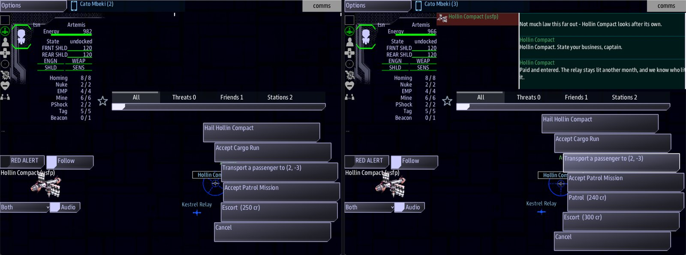

Class 5, Lecture 4 - Reputation¶
What you will have at the end¶
Sides that remember. Each of your three factions values something, and the crew earns a name with each one by what they say and what work they finish. That name is a number called standing. It decides what work a side offers, what the work pays, how a station greets the ship, what a ceasefire costs, and whether an old enemy will take the crew as an ally.

Hollin Compact before the levy, and after: Patrol is on offer and Escort pays 300.You add one line to each side, two lines to the jobs, and a Dialogue chapter with two short calls.
The video¶
About 6 minutes. Subtitles are available in the player.
Before you start¶
- Your
MyUniversemission as Lecture 3 left it.kestrel_verge.amdmatchesc5-03-sides-diplomacy-goods\example\. sbs lint MyUniversesaysclean.- The game closed, and the save deleted:
C:\Cosmos\data\missions\common_data\saves\universe_save_the_kestrel_verge_1.yaml.
You do not need Class 2 for this lecture. Step 3 uses a kind of record that Class 2, Lectures 3 and 4 teach in full. This page gives you the one shape you need.
Words for this lecture:
| Word | Meaning |
|---|---|
| Trait | One way of behaving that a side can care about: honest, fearsome, generous |
| Value | A trait a side cares about, with a number for how much |
| Deed | Something the crew does that a side hears about |
| Standing | One number, from -100 to 100: what one side thinks of one ship. It starts at 0 |
| Threshold | A standing at which something changes |
Step 1 - What each side values¶
The game measures a captain on seven pairs of traits. Each pair is one line with two ends.
| One end | The other end |
|---|---|
honest |
liar |
fearsome |
cowardly |
peaceful |
violent |
generous |
selfish |
kind |
cruel |
resourceful |
by-the-book |
intellectual |
foolish |
Neither end is the good one. A navy may value by-the-book. A band of wreckers may value
fearsome and think nothing of kind.
Open kestrel_verge.amd. Give each side a Values: line, between Home: and Offers:.
In Hollin Compact:
In Deepwell Assembly:
In The Gleaners:
Each item is a trait and a weight. The weights say how much each trait counts beside the others. They do not have to add up to anything.
How standing is worked out. For each trait a side values, the game keeps a score for the ship, from -100 to 100. Standing is the average of those scores, with the weights deciding how much each one counts.
For Hollin, who value honest 40, generous 30:
| The ship's scores with Hollin | Standing |
|---|---|
| honest 20, generous 20 | 20 |
| honest 35, generous 0 | 20 |
| honest 0, generous 20 | 8 |
| honest 100, generous 0 | 57 |
| honest 20, generous -20 | 2 |
Two things to take from that table. A deed that touches only one of a side's values moves standing about half as far. And a crew that pleases a side in one thing only can never reach the top: with Hollin, honesty alone stops at 57.
A score moves toward the other end of its pair when a deed names that end. A deed worth
selfish 20 takes 20 off the ship's generous score.
Step 2 - A deed in work¶
The surest deed is to finish a side's job. When a ship finishes one, the game adds 5 to its score on every trait that side values, so its standing with that side goes up by exactly 5. You write nothing for this. It comes with the job.
The template's jobs have no ending yet, so today you give one of them an ending and one
of them a rank. Find ## [Jobs](jobs).
Change Escort to:
### [Escort](escort)
---
Done when: reach 3, 1
Reward: 250 credits
---
See a freighter safely to its destination.
Change Patrol to:
### [Patrol](patrol)
---
Tier: 2
Reward: 200 credits
---
Sweep a system and clear whatever is hunting in it.
| Line | What it means |
|---|---|
Done when: reach 3, 1 |
The escort is finished when the ship arrives at 3, 1, which is the Deepwell's home. You know this line from your leads |
Tier: 2 |
A rank for the job, 1, 2 or 3. A side offers a tier 2 job only to a ship whose standing with it is 20 or more, and a tier 3 job at 50 or more. A job with no Tier: line is tier 1 |
A tier 2 job is worth 10 to standing when it is finished, and a tier 3 job is worth 15.
Lecture 6 is the lecture about jobs. These two lines are all this lecture needs of them.
Step 3 - A deed in talk¶
The other deed is an answer the crew gives when a side's station calls. Go to the very end of the file, leave one empty line, and add this chapter:
## [Dialogue](dialogue)
### [Hollin Hail](hollin_hail)
---
Speaker: hollin
When: comms
---
%{standing >= 20} Kestrel Relay knows your ship, captain. What do you need?
%{standing < 20} Hollin Compact. State your business, captain.
- [Pay the relay levy](hollin_levy) ; costs 100 credits, earns hollin honest 20, earns hollin generous 20
- [Call the levy a racket](hollin_cold) ; earns hollin selfish 20
- [Sign off](hollin_bye)
### [The Levy](hollin_levy)
---
Speaker: hollin
---
% Paid and entered. The relay stays lit another month, and we know who lit it.
### [A Cold Answer](hollin_cold)
---
Speaker: hollin
---
% Then fly without it, and see how far the light reaches.
### [Hollin Out](hollin_bye)
---
Speaker: hollin
---
% Hollin out.
Read the first record from the top.
| Line | What it means |
|---|---|
Speaker: hollin |
Who is talking: the key of a side |
When: comms |
This is the record that opens when the crew hails one of that side's stations. Comms gets a button for it, Hail Hollin Compact |
A line that starts with % |
Something the speaker says |
%{standing >= 20} |
A guard, in curly brackets, right after the %. The line is said only when the guard is true. Here: only to a ship whose standing with Hollin is 20 or more |
A line that starts with - [ |
An answer the crew can give. The words in square brackets are the button. The key in round brackets is the record that comes next |
; and what follows it |
What choosing that answer does. Items are separated by commas |
costs 100 credits |
Takes 100 credits from the crew. If they do not have it, the answer is refused and the same buttons stay |
earns hollin honest 20 |
The deed: adds 20 to the ship's honest score with Hollin. The three words are a side's key, a trait, and a number |
The three short records under it are where each answer leads. A record with no answers ends the call.
Guard every line, or none. A line with no guard can always be said. If the second
line here had no guard, a friend of Hollin would hear either line, picked at random. A
guard is one comparison: a word, one of >=, >, <=, <, and a number.
An answer can be given again. The crew can hail a station as often as they like, and
each time the answer does its deed again. That is why the levy costs. An answer that
earns standing and costs nothing can be pressed until the side adores the ship.
Now the same for the Gleaners. Add under the last record:
### [Gleaner Hail](gleaner_hail)
---
Speaker: gleaners
When: comms
---
%{standing >= 20} The captain with the nerve. Talk.
%{standing < 20} You are standing in our yard. Explain that.
- [Tell them you go where you like](gleaner_nerve) ; earns gleaners fearsome 35
- [Back away](gleaner_bye) ; earns gleaners cowardly 35
### [Nerve](gleaner_nerve)
---
Speaker: gleaners
---
% Ha. Most of them beg. We will remember the ship that did not.
### [Gleaners Out](gleaner_bye)
---
Speaker: gleaners
---
% Run along, then.
This one costs nothing, on purpose. Step 6 shows you what that does to your story.
Step 4 - The thresholds¶
Standing does nothing by itself. It matters where it crosses a line. These are the lines the game uses when you write none.
| Standing with a side | What changes |
|---|---|
| 20 or more | The side offers tier 2 jobs |
| 50 or more | The side offers tier 3 jobs |
20 or more, with a foe |
A foe offers work at all. Below 20 a foe's station has no jobs |
| Above 0 | Jobs pay more: 1 percent more for each point. At 20 a 250 credit job pays 300. At 100 it pays double |
Below 30, with a foe |
A ceasefire costs 20 credits for each point short of 30: 600 at 0, 400 at 10, 200 at 20 |
30 or more, with a foe |
A ceasefire is free |
| 60 or more | A side the crew has a ceasefire with will accept an alliance |
Standing below 0 counts as 0 for prices. A side that despises the crew charges 600 for a ceasefire, the same as a side that has never heard of them. It pays no bonus and offers nothing above tier 1.
Changing the lines. Each of them is a dial. You do not have to write any. To move
one, add its line to the title record at the top of the file, under Display:. These six
are the game's own numbers:
Job tiers: 20, 50
Foe deals at: 20
Ceasefire free at: 30
Ceasefire per point: 20
Alliance at: 60
Max reward: 2.0
| Dial | What it sets |
|---|---|
Job tiers: 20, 50 |
The standing for tier 2, then for tier 3 |
Foe deals at: 20 |
The standing at which a foe offers work |
Ceasefire free at: 30 |
The standing at which a ceasefire costs nothing |
Ceasefire per point: 20 |
Credits for each point short of that |
Alliance at: 60 |
The standing for an alliance |
Max reward: 2.0 |
How many times the pay at standing 100. 2.0 is double |
Lint does not know these six lines today. Write one and lint gives a warning on it: "
Job tiersis not a field a map has". The game reads the line and uses it all the same. It is the one warning in this class that you may leave standing. The finished files for this lecture do not write the dials, so they lintclean.
Step 5 - Check it¶
Save the file.
Each row below was made on purpose, one change to the finished files, then linted, then played.
Mistakes lint finds
| The mistake | What the game does | What lint says |
|---|---|---|
Value: for Values: |
The side values nothing. Finishing its jobs earns no standing | A warning: "Value is not a field a side has" (unknown-field) |
earns hollin honest 20 and generous 20 |
Neither deed happens. A score is kept under a trait that does not exist | Two warnings: "generous 20 is read as part of earns hollin honest 20, so it never happens" (outcome-run-together), and "honest 20 and generous is not a trait a side can value" (earns-unknown-trait) |
No comma between costs 100 credits and earns |
Takes the 100 credits. No deed | The same warning (outcome-run-together) |
No ; in front of the outcomes |
Nothing: no cost and no deed | A warning: "neither a condition (if ...) nor an outcome (after a ;), so it is ignored" (choice-tail-ignored) |
A guard with two comparisons: %{standing >= 0 and standing < 20} |
The line is never said. When no other line can be said, the station says nothing | Two warnings: "not a condition the game can read, so this line is never spoken" (unreadable-guard, guard-joined) |
Speaker: holin |
No Hail button on that side's stations | A warning: "gives its voice to holin, who is not in the cast" (dangling-speaker) |
An answer that names a record that is not there: (hollin_by) |
Not played | A warning: "points at hollin_by, which resolves to no node" (dangling-choice) |
## [Dialogue](talk) |
No Hail button on any station | A warning on every Speaker: and When: line: "this record is being read as a map" (unknown-field) |
A trait misspelled in Values:, as in honset 40, generous 30 |
The side values a trait no deed can ever name. The levy gives a standing of 8, where it should give 20 | A warning: "Values: honset 40 - honset is not a trait a side can value, so nothing the ship does counts toward it" (values-unknown-trait). It lists the fourteen |
Values: honest, generous, with no numbers |
Standing with that side never moves from 0 | A warning for each trait: "Values: honest has no number after it, so honest counts for nothing" (values-no-weight) |
A side's key misspelled in a deed: earns holin honest 20 |
The score is kept for a side that does not exist. Standing with Hollin does not move | A warning on each deed: "holin is not a side in this mission, so the standing is filed where nobody looks" (earns-unknown-side) |
A deed with no number: earns hollin honest |
Nothing happens. Any costs beside it is still charged |
A warning: "earns hollin honest is not earns <side> <trait> <number>, so this choice moves nobody's standing" (earns-shape) |
The curly brackets left off a guard: %standing < 20 Hollin Compact. |
No guard. The station says the words standing < 20 out loud, to everybody |
A warning: "%standing < 20 has no curly brackets round it, so it is not a condition: the words standing < 20 are spoken aloud, to everybody" (guard-no-braces) |
Mistakes lint cannot see
Lint says clean for every one of these.
| The mistake | What the game does |
|---|---|
No Values: line on a side |
Standing is the plain average of every score the ship has with that side, and finishing its jobs earns nothing |
A deed in a trait the side does not value: earns hollin fearsome 20 |
The score is kept, and standing does not move |
A word misspelled in a guard: %{standng >= 20} |
The line is never said. A ship at 20 or more hears nothing at all |
Words in a guard where a sign should be: %{standing at least 20} |
The same |
| A line with no guard beside lines that have one | It can always be said. A friend hears it or the friendly line, at random |
No When: comms line |
No Hail button |
Tier: two |
The mission stops working when Comms selects a station of a side that offers that job. mast.runtime.log says invalid literal for int() |
Tier: 4 |
The job is never offered. There is no tier above 3 |
Standing: hollin honest 50 on a job |
Nothing. A job's worth to standing is always 5 for each tier |
Three more are about the dials in the title record. Lint gives every dial line the same warning, right or wrong, so its warning tells you nothing about these.
| The mistake | What the game does |
|---|---|
A dial misspelled: Aliance at: 60 |
Ignored. The game's own number stands |
| A dial written in the Scenario record and not the title record | Ignored |
Job tiers: 20, with one number |
Ignored. It needs two |
Max reward: 200% |
The mission stops working the first time a job's pay is worked out. Write 2.0 |
So check these by eye:
- Every trait, in
Values:and afterearns, is one of the fourteen words in Step 1. - Every deed is three things: a side's key, a trait, a number.
- Every guard is in curly brackets, and is one word, one sign and one number.
- Every line in a record has a guard, or none has.
- Each record the crew can hail has
When: comms.
Step 6 - Play it¶
With Hollin.
- In the
commswindow, select Hollin Compact. Among its buttons: Hail Hollin Compact, and Escort (250 cr). There is no Patrol. It is a tier 2 job, and the ship's standing with Hollin is 0. - Press Hail Hollin Compact. The station says "Hollin Compact. State your business, captain." Your three answers are the buttons.
- Press Pay the relay levy. The crew has 400 credits now, and a standing of 20 with Hollin.
- Select the station again. Patrol (240 cr) is on offer, and Escort now reads Escort (300 cr).
- Press Hail Hollin Compact again. This time the station says "Kestrel Relay knows your ship, captain."
- Press Escort (300 cr) to take the job. In the
helmwindow, open the Quest Log, select Hollin Compact: Escort, and press Engage. On arrival at 3, 1 the job is done. It pays 300, and the ship's standing with Hollin is 25.
With the Gleaners.
- In the Quest Log, select The Breaking Yard and press Engage.
- On Comms, select the Gleaners' station. The crew has 700 credits, so Negotiate Ceasefire is there, at a price of 600. Do not press it.
- Press Hail The Gleaners, then Tell them you go where you like. The ship's standing with the Gleaners is 20. While the Gleaners are at war with the crew, their station also has buttons of the game's own, Hail and Taunt among them. Yours is the one with their name in it.
- Select the station again. There is a job now, Salvage (180 cr): a foe deals with a ship at 20. Press Negotiate Ceasefire. It costs 200.
- Give the bold answer twice more. Standing is 57, and it will not go higher: the
fearsome score is at 100, and the Gleaners also value
resourceful, which the crew has done nothing about.
Close the game. Open the save file and find reputation, under the ship's name. The
scores are there, by side. Start the game again and they are still in force.
What you need to know about standing
| Fact | What it means for your story |
|---|---|
| Standing belongs to a ship | Two ships in one game each have their own. It is saved in the ship's record, and a ship that is renamed in settings.yaml keeps it. Class 6 Lecture 2 measures that |
| No screen shows the number | The crew learns their standing from what changes: a greeting, a price, a job on offer. Write lines that tell them |
| An answer can be given again and again | Three bold answers took the Gleaners from enemies to 57. Give a deed in talk a cost, or expect it to be farmed |
| Standing with one side is no business of another | Nothing the crew does for Hollin is heard by the Gleaners, unless you write a deed that names both |
| An alliance is offered only after a ceasefire | A side written neutral never offers one, however high the standing. Only an old enemy becomes an ally |
| A quest in the Narrative chapter can carry a deed, and it reaches every ship | Standing: gleaners fearsome 70 on a story quest was played with two ships. When the quest was done, standing with the Gleaners was 40 for both of them. Lecture 7 uses it. A deed in an answer goes only to the ship that gave the answer |
If something goes wrong¶
| What you see | Likely cause |
|---|---|
| No Hail button on a side's station | The record has no When: comms, its Speaker: is not that side's key, or the chapter's key is not dialogue |
| The station says nothing when hailed | No line can be said. A guard is misspelled, or has two comparisons in it |
The station says standing < 20 out loud |
The curly brackets are missing from that guard |
| The levy is paid and nothing changes | The side's key or a trait is misspelled after earns, or there is no number |
| Pressing Pay the relay levy leaves the same three buttons | The crew has fewer than 100 credits. The answer was refused |
| Patrol never appears | Standing with Hollin is below 20. Pay the levy once |
| Standing rises more slowly than the page says | A trait in that side's Values: is misspelled |
| The mission stops working when Comms selects a station | A Tier: that is not a number, or a Max reward: with a percent sign. Read mast.runtime.log |
| The Gleaners already greet the ship as a friend at the start | The game continued an old save. Close it and delete the save file |
Exercise¶
- Give each of your sides two or three values. Say out loud why each side would care.
- Rewrite both calls in your own sides' voices. Keep the guards.
- Give the Gleaners' bold answer a cost that is not credits to pay: add a second deed to it, with another side's key, so that being feared by one side costs the crew something with another.
- Work out on paper what standing two levies give with your first side's values. Then pay two levies in the game, and see whether tier 2 work and the friendlier greeting arrive when you expect.
- Move one threshold. Add
Ceasefire per point: 10to the title record, and find the price your foe now asks from a crew at standing 0. Lint will warn about the line. Read the warning, and leave it.
Checkpoint¶
You are done when all five are true:
sbs lint MyUniversesaysclean, or its only warnings are on threshold lines in the title record.- A side's station greets a ship one way at standing 0 and another way at 20.
- Paying the levy puts a tier 2 job on offer and raises the pay of the tier 1 job.
- Your foe offers no work at standing 0 and offers some at 20, and its ceasefire is cheaper there.
- After you close the game and start it again, the standing is still in force.
Next¶
Lecture 5 is the map: regions with their own sky and their own dangers, more landmarks, stations that belong to a side, and the dials that shape the whole galaxy.
Further reading¶
- "Sides - who lives here" in the Open Universe writer's walkthrough: the
Values:line. - "The dials", in the same walkthrough: the six threshold lines.
- "Dialogue", in the same walkthrough: lines a side says at each standing. Among every line that can be said, the game picks one at random.
- "Reputation" in the Open Universe reference: every line you can write, every deed that moves standing, and what the game does at each number, on one page.
- Class 2, Lectures 3 and 4, "Dialogue": calls and answers, taught in full.
Download this lecture's finished files (a zip of its example folder).